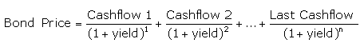
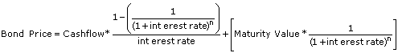

The rate of return anticipated on a bond if held until the end of its lifetime. YTM is considered a long-term bond yield expressed as an annual rate. The YTM calculation takes into account the bond's current market price, par value, coupon interest rate and time to maturity. It is also assumed that all coupon payments are reinvested at the same rate as the bond's current yield. YTM is a complex but accurate calculation of a bond's return that helps investors compare bonds with different maturities and coupons.
Yield to maturity accounts for the present value of a bond's future coupon payments. In other words, it factors in the time value of money, whereas a simple current yield calculation does not.
An approximate YTM can be found by using a bond yield table. However, because calculating a bond's YTM is complex and involves trial and error (guessing and checking), it is usually done by using a business or financial calculator or a computer program.
YTM is the interest rate an investor would earn by investing every coupon payment from the bond at a constant interest rate until the bond's maturity date. The present value of all of these future cash flows equals the bond's market price. The calculation can be presented as:
OR
Solving the equation by hand requires understanding the relationship between a bond's price and its yield. The interest rate is equal to the coupon rate when the bond is priced at par. A bond priced above par (a premium bond) has a coupon rate higher than the interest rate, and a bond priced below par has a coupon rate lower than the interest rate. So if an investor was calculating YTM on a bond priced below par (a discount bond), he would solve the equation by plugging in various annual interest rates that were higher than the coupon rate until he found a bond price close to the price of the bond he was holding.
{kind=link}
{kind=link}